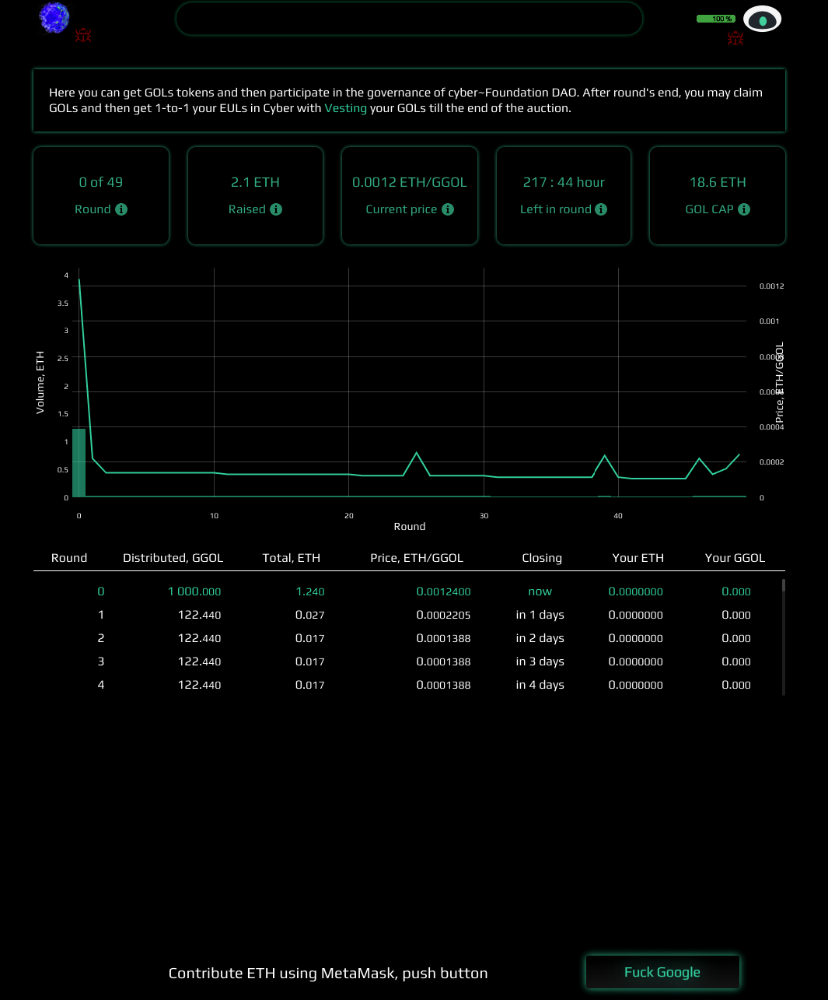
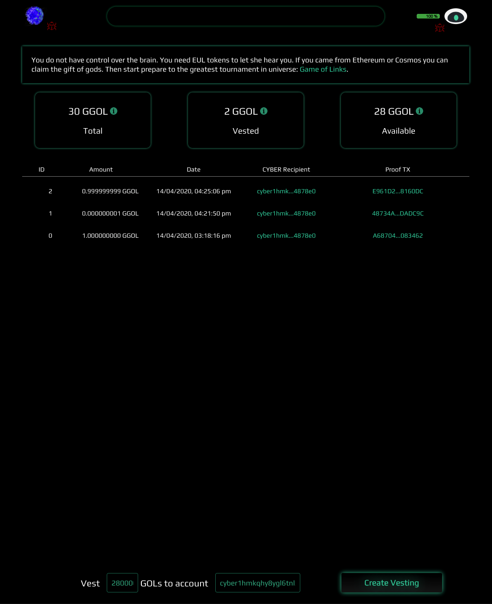
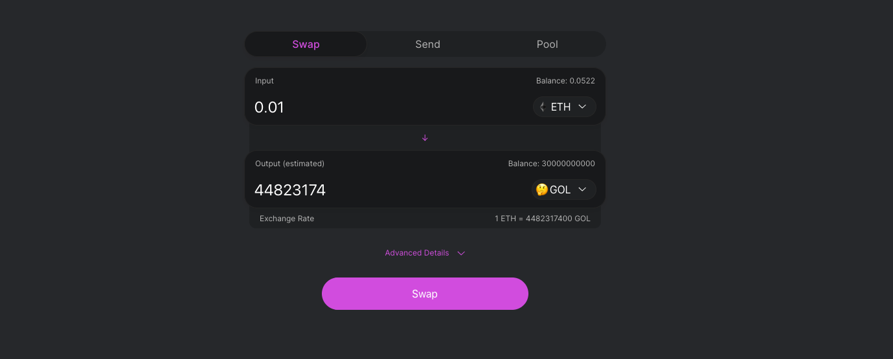

How to get EUL tokens if you have none?
by savetheales on 2020-04-17
EUL tokens are the liquid tokens of the euler testnet network. They are the testing equivalent of CYB in cybers mainnet. You can transfer them, stake them, and most importantly, use them to create cyberlinks to build the Great Web and to participate in the intergalactic tournament. You may also use EUL tokens to start following the hero’s path and set up a validator node for cyber to get tokens from inflation and commission
If your Cosmos or ETH address didn’t make it to the gift pool and you have no tokens for trying out cyber, you may get them very easily and learn all about the cross-chain mechanics we’ve implemented for a better experience of our product structure.
Before we start, I would love to remind you again:
Disclaimer
- EUL are testnet tokens. Please do not use a significant amount of ETH on acquiring them
- In this article, we’ll talk about ERC-20 GOL tokens. These are also testnet tokens. Moreover, they will be burned after the
eulerepoch is over and before thecybermainnet kicks off. The value of these tokens is:- You can vest GOL tokens on a 1:1 basis for any
cyberaddress. This action will freeze GOL tokens for transfers - You can test and dive into the mechanics of the cyber~Congress DAO and our cross-chain companion
- You can vest GOL tokens on a 1:1 basis for any
- All of the ETH donated during the test~Auction will be transferred according to the results of governance proposals
test~Auction
You may participate in the test~Auction. The mechanics are very simple: the auction has 50 rounds. For each round, there are test GOL ERC-20 tokens, that are allocated to that round. For the first round, a total of 1000.00 GGOLs is allocated. For the consequent 49 rounds, 122.44 GGOLs are allocated per each round. The first round will last for 10 days. The other rounds will last for 1 day each. You can use your ETH to participate in any of the open rounds and claim your GOL tokens proportionally per all of the bids in the round.
Note: GGOL is equal to 1 Giga GOL, which is = 1,000,000,000

All you need to do is:
- Turn on your Metamask extension and go to cyber.page (if you are unsure how to use metamask, we recommend you watch the official videos, it’s very simple, we promise!)
- Push the “Fuck google” button and allow Metamask to connect
- At the bottom of the page, set the amount of ETH you want to use (read the disclaimer!)
- Set the round you want to participate in (you can participate in the current round or in any of the open, future rounds)
- Push the “confirm” button and follow metamask’s instructions
- At the bottom of the page, a notice with the tx hash will appear. You can view the transaction on Etherscan or press
OKand wait for the confirmation
Note: the minimum bid on the auction is 0.01 ETH
After the transaction is confirmed by the ETH network, you should see your bid in the “Your ETH” column and the estimated GGOLs for the current moment in “Your GGOL” column (this number is dependent on the amount of ETH donated at each round).
Once the round is closed the “claim” button should be available to grab the tokens you’ve won. Push it and follow the instructions of your metamask extension.
For your comfort (making transactions), you should add GOL tokens to your metamask account by adding the following contract address (once again, this is very simple and there are lots of guides on how to do it, for example this one):
0xf4ecdba8ba4144ff3a2d8792cad9051431aa4f64
Once your tokens are in your pocket you can vest EUL tokens on a 1:1 proportion to any cyber address. The vesting page is available by clicking vesting, in the box above the chart, or via a direct link.

If your metamask account is connected and you already have GOL tokens on your balance, you should see the total amount of GOL vested and available to transfer. Vested GOL tokens are the tokens you already vested to get EUL tokens. It means that these tokens are frozen for transfers. Available GOL tokens are the tokens you can vest or send. Total is the sum of vested and the available tokens together.
Note: How do I get a cyber address? Currently, the easiest way to do so is to connect your Ledger device to cyber.page with an installed Cosmos app, this will automatically create one. We recommend reading the masters section of the homestead doc
To get EUL tokens you just need to pick the amount of GOL tokens you wish to vest and a cyber address for transferring EUL tokens. If you have previously connected your Ledger device to cyber.page, the app will automatically fill in your cyber address for you (of course, if you want to vest to a different address, you need to change it). Push the “Create vesting” button, read and check the summary and push “Create TX”. Follow Metamask instructions. After the transaction is confirmed you can see an entry in the table below with the amount of GOL tokens vested, a date, a cyber recipient address and a hash of the transaction for the euler network.
The GOL tokens you have just vested will be moved to the Vested section, and the Available for transfer amount of GOL tokens will decrease by the vested value.
Congratulations! You have EUL tokens for interacting with the euler test network!
Note: Why would I want to interact with the euler test network? To play GoL (Game of Links) of course and get more rewards! To learn how to play, check the GoL section of the homestead doc. Of course, you may want to participate as a hero, if so, check the engeneer section of the doc
Exchange
Before moving onto this part, please read the disclaimer at the top of this post again!
If you are obtaining GOL tokens just to vest and play the Game of Links then 10-20 MGOLs (0.002 - 0.006 ETHs) should be enough to make between 4-8 links per day. Remember that your battery charge (bandwidth) equals to 0 right after the transfer and you need roughly 24 hours for a full recovery (you can see your charge next to the green eye on cyber.page).
This method is much more expensive, but the price and the amount of GOL tokens is deterministic (the more you acquire, the higher the cost). On the plus side of things, you don’t need to wait for the closing of a specific round and claim your tokens. You can vest GOL tokens as soon as the transaction is confirmed on the Ehereum network. There is no bottom limit for buying GOL tokens using uniswap unlike in the auction. If you don’t want to spend as much as 0.01 ETHs for GOL tokens, you can spend less.

- Connect your metamask to Uniswap
- In the
Outputtoken section, insert the GOL token contract address: (For the above step, simply click on theSelect a tokenfield, copy the address below into the search box and click onGOLto add it)
0xf4ecdba8ba4144ff3a2d8792cad9051431aa4f64
- Choose the amount of GOL tokens you want to get and push “Swap”
- Follow the instructions in your Metamask window
After the network confirms the transaction, you may use the GOL tokens in your Metamask account and vest them to get EUL tokens as described above.